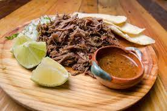
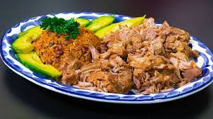
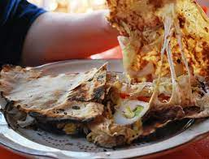
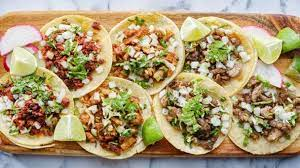
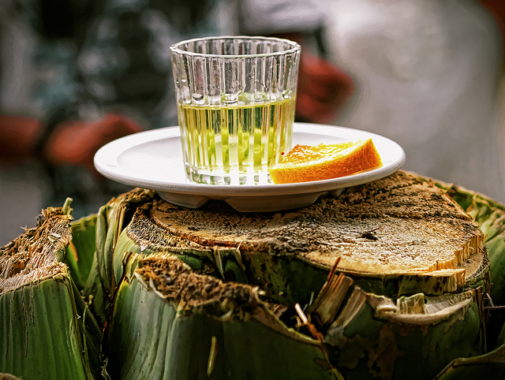
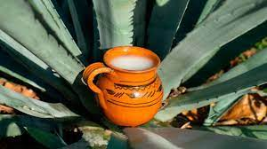
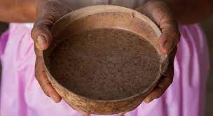

Comidas Tipicas de México
Comidas Tipicas de México
La cocina es una recompensa para el paladar y en México si estás celebrando algo probablemente el plato principal en la mesa será un buen Mole. En nuestro país podrás encontrar una gran variedad de ellos, algunos llegan a ser tan sofisticados que pueden contener un sinfín de ingredientes de diferentes partes del mundo que al mezclarlos correctamente toman una identidad indudablemente mexicana. Es una salsa que está viva y de verdad al ponerlo en tu boca literalmente se vuelve una gran fiesta para el paladar.
pozole
Para hablar de este delicioso guiso hay que remontarnos un poco en la historia ya que varios Frailes comenzaron a documentar su existencia. Fray Bernardino de Sahagún, escribió sobre el singular platillo en su monumental obra: Historia general de las cosas de la Nueva España. Podemos afirmar que lo escribió con repugnancia, ya que los antiguos mexicas preparaban el pozole con carne de los cautivos sacrificados en algunas fiestas, principalmente la dedicada a Nuestro Señor el Desollado, Xipe Totec. Dicho festejo llevaba el nombre de Tlacaxipehualiztli. Hoy en día dicho platillo tiene una preparación diferente y más civilizada ya que en nuestros días se hace con carne de cerdo. En la actualidad el pozole ha sufrido cambios y diferencias asociadas con la región donde se prepara y consume. En el estado de Guerrero se prepara el blanco y el verde, mientras que en la Ciudad de México, Sinaloa, Nayarit y Jalisco se consume la variante roja.
Cochinita Pibil
En México, la cocina, como el mapa, se divide en varias regiones. La gastronomía de cada una de ellas es muy distinta de la otra. La cocina de Yucatán es bastante particular. En primera, porque se desarrolló muy lejos de lo que sucedía al centro del país, y por la influencia que tuvieron los mayas. No es por nada que forma parte importante de las rutas gastronómicas y el platillo más conocido de esta zona es la cochinita pibil. La cochinita pibil es parte de la fusión cultural que se desarrolló en Yucatán: la española y la maya. Este platillo preparado con carne de cerdo adobada en achiote y envuelta en hojas de plátano, tradicionalmente se cocinaba dentro de un hoyo en el suelo sobre piedras calientes, ya que pibil en lengua Maya significa “bajo tierra”. Esta preparación de hornos bajo la tierra es especialmente representativa porque era fundamental para la celebración más importante del mundo prehispánico, el “Hanal Pixan”, o Día de Muertos. Para esta celebración, los mayas elaboraban un gran tamal que contenía diversas carnes de animales como venado y faisán.
Chiles en Nogada
Podríamos afirmar que este es uno de los platillos más representativos, bellos y deliciosos que podrás encontrar en nuestra gastronomía. Existen diferentes versiones acerca de su aparición, pero se sabe que este platillo data de 1821, año en el cual Agustín de Iturbide firmó el acta de los tratados de Córdoba. Algunos cuentan que fueron las madres agustinas del Convento de Santa Mónica en Puebla las que al saber que Don Agustín estaría en esa ciudad para celebrar su santo, el 28 de agosto, decidieron elaborar un platillo que recordara los colores de la bandera. Hoy en día es uno de los platillos principales que acompañan nuestras fiestas patrias
Barbacoa La barbacoa es un método de cocción prehispánico que consistía en formar un hoyo en la tierra, calentarlo con brasas de leña y colocar piedras para cocinar a altas temperaturas. Sobre estas piedras se ponían las carnes que habían de cocerse envueltas en hojas de plátano o maguey dependiendo de la región; para finalizar su preparación las carnes se colocaban bajo tierra y se dejaban cocinar por largas horas. Hoy sin duda se ha vuelto una exquisitez y para algunos, un remedio delicioso y eficaz para la resaca.
Carnitas Los domingos, las carnitas conforman uno de los rituales más íntimos de la vida en México. Es un paisaje cotidiano. Las personas llegan, se acercan, miran, van pidiendo y de alguna manera se acomodan, ya puede ser de pie o sentados, lo importante es encontrar un espacio suficiente como para alzar el codo. Aquí los dedos se llenan de grasa, también el bigote y, en un descuido, hasta la ropa; más allá del alimento, los tacos de carnitas son una actitud ante la vida. En la búsqueda de sabores, sazón y riqueza, hay quienes agregan al perol de las carnitas ingredientes exóticos como frutas, chiles, azúcar, leche o refrescos. En fin, cada uno con su cada cual, para hacer la diferencia, el detalle de distinción, el gesto poderoso, aquello que dé a las carnitas un toque personal. Aunque a esto pueda parecer una aberración para los puristas de “El Estilo Michoacán”.
Pescado a la talla
México tiene la suerte de contar con el Océano Pacifico y el Golfo de México. Ir de vacaciones a las playas de Guerrero representa no solo disfrutar del sol y las olas, sino también deleitarse con su gastronomía. Y no hay mejor emblema de esta comida que el Pescado a la talla, el cual es abierto en mariposa y es cocinado a las brasas, y se unta una salsa roja preparada con chiles y especias. Con apenas 50 años, ya es uno de los representantes del puerto de Acapulco y es que esta delicia que actualmente podemos disfrutar en las palapas o restaurantes a la orilla del Pacifico, en especial en Barra Vieja, Guerrero, es creación de Beto Godoy y su esposa, Gregoria Galeana.
Pescado a la Veracruzana
En Veracruz tiene lugar la primera gran fusión entre dos importantes cocinas: la española y la indígena. Productos, utensilios y técnicas de cocina europea e indígena dan como resultado el arte culinario mexicano. En la entidad, anclada a las orillas del Golfo de México donde Hernán Cortés fundó la Real Villa Rica de la Santa Vera Cruz en 1519, comenzó el contacto directo con los españoles y dio por resultado una zona típicamente mercada por el mestizaje y el encuentro, de ahí nace este delicioso guiso muy parecido al bacalao preparado en algunas regiones de España.
Tlayudas Son exclusivas de Oaxaca y uno de sus platos más populares. Tlayuda es en realidad el nombre que se le da a la gran tortilla de maíz; las Tlayudas se pueden preparar sin carne (sencillas), o con cecina, res, chorizo, o a veces con otros ingredientes más extravagantes. Los ingredientes básicos pueden variar, pero en general un Tlayuda es preparada con lechuga, tomate, frijoles refritos, aguacate, queso (o quesillo) y luego guacamole y salsa de chile se añaden al gusto. Sin duda un manjar oaxaqueño.
Tacos Por último y no menos importante encontramos el delicioso e histórico, taco, que forma parte de la diversidad cultural y gastronómica México. Ya sea al pastor, de carnitas, de longaniza, cochinita, barbacoa, birria, carne asada, pollo, chile, nopal con queso, chapulines, aguacate, entre otros más; el taco posee una increíble variedad que es para gustos de todos los amantes del maíz. Si bien se desconoce a ciencia cierta su origen, se cree que el taco nació como la base de una dieta olmeca gracias a los primeros vestigios del maíz nixtamalizado.
Bebidas Tipicas de México
Claro que esta tenia que ser el lugar numero uno, considerado por muchos como una de las bebidas alcohólicas mejor manufacturadas del mundo, el tequila posee un proceso de elaboración muy interesante como su sabor. Jalisco es la cuna de la bebida mexicana más famosa del mundo, es por eso que aquí mismo se encuentra la Ruta del tequila.
Mezcal Es una bebida tradicional de Oaxaca, cuenta la leyenda que un rayo cayo sobre una planta de agave, abriendo y cociendo su centro, los nativos percibieron el aroma del néctar que emanaba y bebieron el liquido que según ellos, sus dioses les habían regalado. Así nació el mezcal, elegido como el segundo más representativo de México. Aunque esta bebida sirve también como medicina tradicional, es también uno de los imprescindibles en las fiestas mexicanas, y es que como dice el dicho “para todo mal, un buen mezcal, y para todo bien, también”, ni como negarnos.
Pulque Tiene un origen prehispánico, bebida tradicional de Hidalgo y parte centro del país, fue considerado por muchos años como exclusiva de las clases bajas, también fue muy importante durante la Conquista ya que los impuestos recaudados con venta y producción fueron esenciales para la economía de la Colonia.
Pozol Desde la época prehispánica, los mayas-chontales, lo llamaban “pochotl”, lo consumían para quitar la sed y calmar el hambre. Esta bebida, elaborada principalmente por mujeres era un alivio para los viajeros que encontraban en el pozol todo lo necesario para resistir el calor durante su largo camino. Proveniente principalmente de los campos de Tabasco y Chiapas donde el maíz y el cacao se convirtieron en la combinación ideal para ser una bebida típica del sureste mexicano.